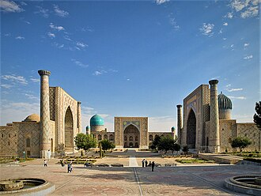
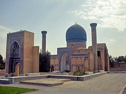
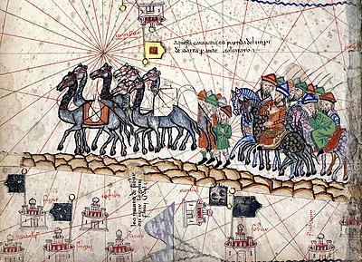
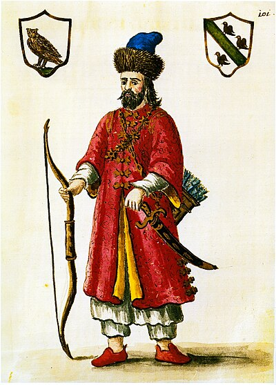
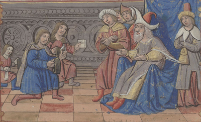
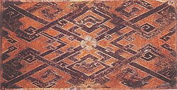
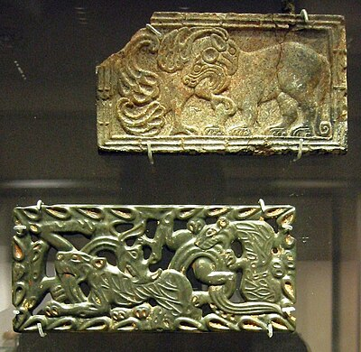
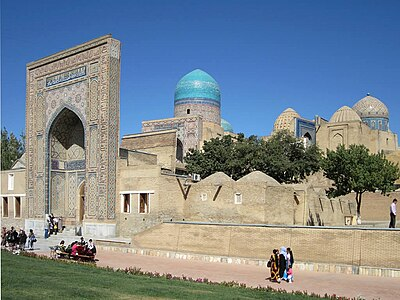

The Ancient Network Connecting China to Rome — 6,400km of Trade and Ideas
130 BC – 1453 AD · East Meets West
The Great Oasis Cities

Chang'an (Xi'an), China
Eastern Terminus · Tang Dynasty Capital
The starting point of the Silk Road — one of history's largest cities. Under the Tang Dynasty (618–907 AD), it had over 1 million inhabitants and was the world's most cosmopolitan city, hosting merchants from Persia, Arabia, India, Korea, and Japan.

Samarkand, Uzbekistan
Jewel of the Silk Road
Perhaps the Silk Road's most famous city — an oasis in the Uzbek steppe. A great center of art, science, and trade for millennia. Sacked by Alexander the Great, rebuilt, conquered by Genghis Khan, and later made Timur's magnificent capital (Registan Square stands today).
Dunhuang, China
Gateway to Central Asia
A crucial oasis where the route split north and south around the Taklamakan Desert. Home to the Mogao Caves — over 500 Buddhist grottoes containing 45,000 painted murals and thousands of manuscripts, including the world's oldest printed book (Diamond Sutra, 868 AD).
Palmyra (Tadmor), Syria
Queen of the Desert
A Roman-era caravan city at the intersection of routes from Mesopotamia, Arabia, and the Mediterranean. Queen Zenobia briefly created an empire challenging Rome. Its spectacular ruins remain — though damaged by ISIS in 2015.
Constantinople (Istanbul)
Western Terminal · Bridge to Europe
The Silk Road's western hub, where goods from the East entered Europe. The Byzantine Empire controlled this chokepoint for 1,000 years, growing enormously wealthy from transit taxes. Its fall to the Ottomans in 1453 spurred Europeans to find alternate sea routes — triggering the Age of Exploration.
Kashgar, China
The Greatest Crossroads
At the foot of the Pamirs where routes from China, India, Persia, and Central Asia converged. Still hosts a traditional Sunday market — the largest in Asia — where traders have met for 2,000 years. Described by Marco Polo in 1273.
What Traveled the Silk Road
🧵
Silk
China → West
China's most jealously guarded secret. Smuggling silkworm eggs was punishable by death. The Byzantine Empire finally stole the secret via monks in 552 AD.
🌶️
Spices
India/SE Asia → West
Pepper, cinnamon, ginger, cloves. Worth more than gold weight-for-weight in medieval Europe. Their high value funded the Age of Exploration.
💎
Jade & Gems
Central Asia → China
Jade, lapis lazuli from Afghanistan, rubies from Burma. The emperors of China valued jade as the most sacred material — a stone of heaven.
🍵
Tea
China → Central Asia
Tea became a currency along Central Asian routes — compressed tea bricks were used as money. The Mongolian steppe warriors became dependent on Chinese tea.
🐎
Horses
Central Asia → China
Chinese emperors desperately wanted Central Asian "blood-sweating" horses. The entire Silk Road trade was partly justified by China's need for military horses from the steppe.
🧪
Gunpowder
China → West
Invented in China by Taoist alchemists seeking immortality. Arrived in Europe via the Silk Road and Islamic intermediaries, transforming medieval warfare and ending feudalism.
📖
Ideas & Religions
In Both Directions
Buddhism, Islam, Christianity, and Zoroastrianism all traveled the Silk Road. Paper-making, printing, algebra, and astronomical knowledge flowed both ways.
🦠
The Black Death
Central Asia → Europe
The Silk Road's most terrible cargo — the bubonic plague traveled from Central Asia to Europe via Mongol trade networks in the 1340s, killing 1 in 3 Europeans.
Timeline of the Silk Road
130 BC
Zhang Qian Opens the Route
Han Emperor Wu sends diplomat Zhang Qian west to seek allies against the Xiongnu. He returns with knowledge of Bactria and Parthia — and the first direct contact between China and the western world. The Silk Road is born.
100 AD
Roman-Chinese Indirect Contact
Roman goods (glassware, gold) reach China; Chinese silk fills Roman fashions. Direct contact is blocked by Parthia (Persia), which profits enormously as middleman. Romans called China "Serica" — land of silk.
552 AD
Byzantine Monks Steal Silk Secret
Emperor Justinian I sends monks to China who smuggle silkworm eggs out hidden in hollow canes. The Byzantine silk industry is born — China's 3,000-year monopoly broken.
1271
Marco Polo's Journey Begins
17-year-old Marco Polo travels the Silk Road to Kublai Khan's China. His 17-year stay and subsequent book introduced European readers to the wonders of the East — and inspired Columbus's search for a sea route.

1453
Constantinople Falls — Silk Road Ends
The Ottoman conquest of Constantinople blocks the land route to the East. European nations scramble to find sea routes — triggering the Portuguese exploration of Africa's coast and Columbus's 1492 voyage west.
The Caravan Crossing the Desert
Click to send a caravan — trading goods across the ancient world's highways
Gallery — Wonders of the Silk Road
Registan Square, Samarkand
The heart of ancient Samarkand, Uzbekistan — flanked by three grand madrassas. Timur (Tamerlane) made this city his imperial capital in the 14th century and it became the Silk Road's greatest hub.
Gur-e-Amir Mausoleum
The tomb of Timur (Tamerlane) in Samarkand, built in 1403. Its ribbed turquoise dome became the template for Mughal architecture, including the Taj Mahal. Timur's empire controlled the Silk Road.

Marco Polo
An 18th-century depiction of Marco Polo in Tartar dress. The Venetian merchant traveled the Silk Road to China between 1271–1295, spending 17 years at the court of Kublai Khan.
Marco Polo's Caravan
Illumination from the 1375 Catalan Atlas depicting Marco Polo's caravan crossing the Gobi Desert. The Atlas was one of the most detailed maps of the known world in the medieval era.

Kublai Khan Meets Marco Polo
A medieval illumination depicting Kublai Khan receiving Marco Polo and his father and uncle at the Mongol court. The Khan welcomed foreign merchants and scholars to his cosmopolitan empire.

Han Dynasty Silk
Woven silk from the Western Han Dynasty (206 BC–9 AD) — the commodity that gave the Silk Road its name. China guarded the secret of silk production for 3,000 years; smuggling silkworm eggs was punishable by death.

Chinese Jade
Jade plaques from ancient China — one of the most prized commodities traded along the Silk Road. Central Asian jade flowed east to China while silk flowed west, forming the core of the trade network.

Shah-i-Zinda Necropolis
The necropolis of Shah-i-Zinda in Samarkand, containing some of the finest Islamic tilework in the world. Built over a millennium, it contains tombs of Timur's family and Silk Road nobles.